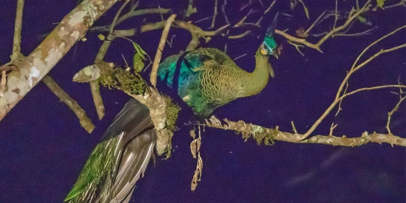
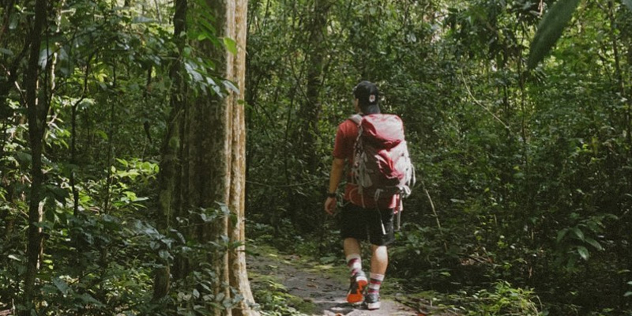

Danh lam thắng cảnh Vườn Quốc gia Cát Tiên
Vườn Quốc gia Cát Tiên (hay còn được biết là Khu du lịch Nam Cát Tiên) là một vùng đất xanh mướt với hệ thống động thực vật vô cùng đa dạng. Nơi đây được UNESCO công nhận là “Khu dự trữ sinh quyển thế giới” với hàng trăm loài động vật quý hiếm ghi tên vào Sách Đỏ Việt Nam.
Nam Cát Tiên còn được biết đến như “lá phổi xanh” của vùng Đông Nam Bộ và là ngôi nhà chung của hàng trăm loài động thực vật hiếm có. Không những thế, thảm thực vật nơi đây cũng vô cùng đa dạng với hệ thống rừng cổ thụ gồm những loại cây tùng, cây si, cây bằng lăng… cao lớn cùng những tán cây xanh mướt, căng tràn nhựa sống.

Nhưng Vườn Quốc gia Cát Tiên thu hút du khách không chỉ nhờ vào hệ thống sinh quyển đa dạng mà còn có mang đến nhiều trải nghiệm tuyệt vời khác.
- Thời điểm lý tưởng nhất để khám phá vùng đất lành Nam Cát Tiên
- Phương tiện di chuyển đến Vườn Quốc gia
- Kinh nghiệm du lịch Vườn Quốc gia Cát Tiên
- Những lưu ý khi khám phá Vườn Quốc gia Cát Tiên
1. Thời điểm lý tưởng nhất để khám phá vùng đất lành Nam Cát Tiên
Bạn có thể thoải mái chiêm ngưỡng và khám phá “lá phổi xanh” này từ tháng 12 - tháng 5 nhờ vào khí hậu ôn hòa dễ chịu. Khi đó, thời tiết tại Vườn Quốc gia Cát Tiên sẽ khô ráo và ít mưa, rất thuận tiện cho chuyến đạp xe xuyên rừng.
Còn nếu bạn muốn tìm đến Nam Cát Tiên vào những mùa khác trong năm, hãy xem trước dự báo thời tiết và lịch trình di chuyển phù hợp để đảm bảo chuyến đi vẫn trọn vẹn niềm vui nhé!

2. Phương tiện di chuyển đến Vườn Quốc gia
Vườn Quốc gia Cát Tiên là một địa điểm du lịch xanh tọa lạc tại địa bàn 3 tỉnh giáp ranh là Đồng Nai, Lâm Đồng và Bình Phước. Khu du lịch chỉ cách TP.HCM khoảng 150km với cung đường tương đối dễ đi nên thường được du khách lựa chọn để khám phá vào cuối tuần.
2.1. Di chuyển từ các tỉnh miền bắc hoặc miền trung đến TP.HCM
Với các bạn ở khu vực miền Bắc muốn khám phá Nam Cát Tiên thì có thể bay đến TP. HCM và tiếp tục di chuyển bằng xe khách, xe ô tô hoặc xe máy để đến Vườn Quốc gia. Bạn có thể lựa chọn những chuyến bay đến TP. HCM từ tất cả các hãng hàng không nội địa với những khung giờ khác nhau để phù hợp với lịch trình của mình.
2.2. Di chuyển từ TP.HCM đến Vườn Quốc gia Cát Tiên (Đồng Nai)
-
Di chuyển bằng xe máy
Bạn có thể chọn cung đường quốc lộ 1A. Khi đến ngã ba Dầu Giây thì bạn tiếp tục rẽ trái để vào quốc lộ 20 và di chuyển khoảng 58km. Khi gặp ngã ba Tà Lài tại cột mốc số 125 thì bạn rẽ trái và tiếp tục di chuyển thêm khoảng 24km. Khi đó bạn sẽ thấy cổng vào của Vườn Quốc gia Nam Cát Tiên.
-
Di chuyển bằng ô tô
Với du khách lái ô tô thì có thể di chuyển theo hướng cao tốc Long Thành - Dầu Giây
Sau khi ra khỏi cao tốc, bạn tiếp tục di chuyển đi theo quốc lộ 20 và rẽ trái tại Tà Lài như chỉ dẫn bên trên của lộ trình dành cho xe máy là đến nơi.
-
Di chuyển bằng xe khách
Trong trường hợp bạn muốn đến Vườn Quốc gia Cát Tiên bằng xe khách thì có thể tham khảo các hãng xe có tuyến đi từ Bến xe Miền Đông đến Nam Cát Tiên uy tín như: Mai Linh, Phương Trang,...
3. Kinh nghiệm du lịch Vườn Quốc gia Cát Tiên
Khám phá Bàu Sấu: Một khi đã bước chân đến đây thì bạn không thể nào bỏ lỡ hoạt động nổi bật nhất tại Bầu Sấu. Đó là tận mắt chứng kiến môi trường sống tự nhiên của hơn 60 loại cá sấu nước ngọt quý hiếm.
Tìm đến Trạm Cứu hộ gấu Đảo Tiên: Tại Đảo Tiên có các loài voọc bạc, voọc vá chân đen, cu li nhỏ, vượn đen má vàng. Đặc biệt, đây cũng là nơi chăm sóc những chú gấu bị thương do nạn săn bắt trái phép.

Trải nghiệm ngắm động vật hoang dã săn thức ăn đêm: Nếu có dự định nghỉ qua đêm tại Vườn Quốc gia thì bạn đừng bỏ qua cơ hội trải nghiệm ngắm các loài thú hoang dã săn mồi vào ban đêm. Vừa hào hứng lại kích thích, đây chắc chắn là trải nghiệm có “một không hai” trong kinh nghiệm du lịch Vườn Quốc gia Cát Tiên đó nhé!
4. Những lưu ý khi khám phá Vườn Quốc gia Cát Tiên
- Trang phục: Chọn loại gọn nhẹ, thoáng mát, co giãn tốt và thấm hút nhanh để di chuyển đường xa. Bạn nên mặc đồ dài để tránh bị côn trùng cắn. Không nên mặc quần jean vì khó vận động lâu dài.
- Giày Trekking: Nên chọn giày ôm vừa chân với độ ma sát, đàn hồi và bám dính tốt. Bên cạnh đó, bạn cũng nên lót thêm bông hoặc đệm mút êm ái, tránh đau chân do di chuyển nhiều.
- Dép hoặc sandals: Mang theo để thay trong lúc cắm trại sẽ tiện di chuyển hơn.
- Nước và thức ăn: Bạn chỉ nên mang vừa đủ nước, lương thực, thực phẩm gọn nhẹ như: lương khô, mì tôm hay xúc xích,... để đỡ phải mang vác nặng.
- Dụng cụ hỗ trợ: Balo gọn nhẹ và gậy chống sẽ giúp bạn di chuyển dễ dàng hơn khi đi xuyên rừng.
- Dụng cụ sơ cứu y tế: Nên mang các loại thuốc cơ bản như thuốc đau bụng, đau đầu, hạ sốt, thuốc xịt côn trùng, sát trùng và băng gạc cá nhân,...
- Tiền mặt: Ở khu du lịch sẽ không có cây ATM nên bạn cần chuẩn bị vừa đủ một khoản tiền mặt để chuyến vui chơi không bị gián đoạn.
